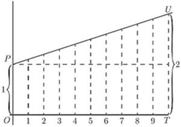
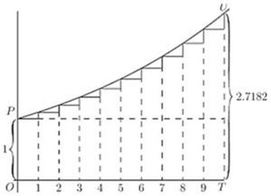
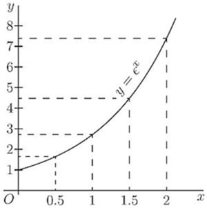
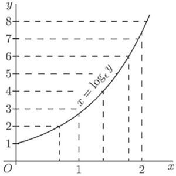
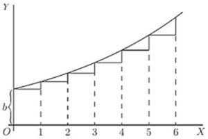
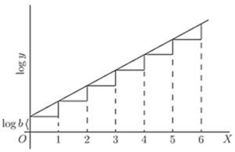
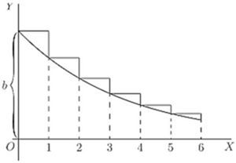

Chapter 16: Chapter XIV. on True Compound Interest and the Law of Organic Growth¶
16.1 Chapter XIV. on True Compound Interest and the Law of Organic Growth¶
LET there be a quantity growing in such a way that the increment of its growth, during a given time, shall always be proportional to its own magnitude. This resembles the process of reckoning interest on money at some fixed rate; for the bigger the capital, the bigger the amount of interest on it in a given time.
Now we must distinguish clearly between two cases, in our calculation, according as the calculation is made by what the arithmetic books call "simple interest," or by what they call "compound interest." For in the former case the capital remains fixed, while in the latter the interest is added to the capital, which therefore increases by successive additions.
(1) At simple interest. Consider a concrete case. Let the capital at start be , and let the rate of interest be 10 per cent. per annum. Then the increment to the owner of the capital will be every year. Let him go on drawing his interest every year, and hoard it by putting it by in a stocking, or locking it up in his safe. Then, if he goes on for 10 years, by the end of that time he will have received 10 increments of each, or , making, with the original , a total of in all. His property will have doubled itself in 10 years. If the rate of interest had been 5 per cent., he would have had to hoard for 20 years to double his property. If it had been only 2 per cent., he would have had to hoard for 50 years. It is easy to see that if the value of the yearly interest is of the capital, he must go on hoarding for  years in order to double his property.
years in order to double his property.
Or, if  be the original capital, and the yearly interest is , then, at the end of years, his property will be
be the original capital, and the yearly interest is , then, at the end of years, his property will be
(2) At compound interest. As before, let the owner begin with a capital of , earning interest at the rate of 10 per cent. per annum; but, instead of hoarding the interest, let it be added to the capital each year, so that the capital grows year by year. Then, at the end of one year, the capital will have grown to ; and in the second year (still at ) this will earn interest. He will start the third year with , and the interest on that will be .; so that he starts the fourth year with ., and so on. It is easy to work it out, and find that at the end of the ten years the total capital will have grown to . In fact, we see that at the end of each year, each pound will have earned of a pound, and therefore, if this is always added on, each year multiplies the capital by ; and if continued for ten years (which will multiply by this factor ten times over) will multiply the original capital by 2.59374. Let us put this into symbols. Put for the original capital; for the fraction added on at each of the operations; and for the value of the capital at the end of the operation. Then
But this mode of reckoning compound interest once a year, is really not quite fair; for even during the first year the ought to have been growing. At the end of half a year it ought to have been at least , and it certainly would have been fairer had the interest for the second half of the year been calculated on . This would be equivalent to calling it per half-year; with 20 operations, therefore, at each of which the capital is multiplied by . If reckoned this way, by the end of ten years the capital would have grown to ; for
But, even so, the process is still not quite fair; for, by the end of the first month, there will be some interest earned; and a half-yearly reckoning assumes that the capital remains stationary for six months at a time. Suppose we divided the year into 10 parts, and reckon a one-percent. interest for each tenth of the year. We now have 100 operations lasting over the ten years; or which works out to .
Even this is not final. Let the ten years be divided into 1000 periods, each of of a year; the interest being per cent. for each such period; then which works out to .
Go even more minutely, and divide the ten years into 10,000 parts, each of a year, with interest at of 1 per cent. Then which amounts to .
Finally, it will be seen that what we are trying to find is in reality the ultimate value of the expression , which, as we see, is greater than 2; and which, as we take larger and larger, grows closer and closer to a particular limiting value. However big you make , the value of this expression grows nearer and nearer to the figure a number never to be forgotten.
Let us take geometrical illustrations of these things. In Fig. 36, stands for the original value. is the whole time during which the value is growing. It is divided into 10 periods, in each of which there is an equal step up. Here  is a constant; and if each step up is of the original , then, by 10 such steps, the height is doubled. If we had taken 20 steps, each of half the height shown, at the end the height would still be just doubled. Or such steps, each of of the original height , would suffice to double the height. This is the case of simple interest. Here is 1 growing till it becomes 2.
is a constant; and if each step up is of the original , then, by 10 such steps, the height is doubled. If we had taken 20 steps, each of half the height shown, at the end the height would still be just doubled. Or such steps, each of of the original height , would suffice to double the height. This is the case of simple interest. Here is 1 growing till it becomes 2.

In Fig. 37, we have the corresponding illustration of the geometrical progression. Each of the successive ordinates is to be , that is, times as high as its predecessor. The steps up are not equal, because each step up is now of the ordinate at that part of the curve. If we had literally 10 steps, with for the multiplying factor, the final total would be or 2.594 times the original 1. But if only we take sufficiently large (and the corresponding sufficiently small), then the final value to which unity will grow will be 2.71828.

Epsilon. To this mysterious number 2.7182818 etc., the mathematicians have assigned as a symbol the Greek letter (pronounced epsilon). All schoolboys know that the Greek letter  (called pi) stands for 3.141592 etc.; but how many of them know that epsilon means 2.71828? Yet it is an even more important number than !
(called pi) stands for 3.141592 etc.; but how many of them know that epsilon means 2.71828? Yet it is an even more important number than !
What, then, is epsilon?
Suppose we were to let 1 grow at simple interest till it became 2; then, if at the same nominal rate of interest, and for the same time, we were to let 1 grow at true compound interest, instead of simple, it would grow to the value epsilon.
This process of growing proportionately, at every instant, to the magnitude at that instant, some people call a logarithmic rate of growing. Unit logarithmic rate of growth is that rate which in unit time will cause 1 to grow to 2.718281. It might also be called the organic rate of growing: because it is characteristic of organic growth (in certain circumstances) that the increment of the organism in a given time is proportional to the magnitude of the organism itself.
If we take 100 per cent. as the unit of rate, and any fixed period as the unit of time, then the result of letting 1 grow arithmetically at unit rate, for unit time, will be 2, while the result of letting 1 grow logarithmically at unit rate, for the same time, will be .
A little more about Epsilon. We have seen that we require to know what value is reached by the expression , when becomes indefinitely great. Arithmetically, here are tabulated a lot of values (which anybody can calculate out by the help of an ordinary table of logarithms) got by assuming and so on, up to . ![StartLayout 1st Row 1st Column left parenthesis 1 plus one half right parenthesis squared 2nd Column equals 2.25 period 2nd Row 1st Column left parenthesis 1 plus one fifth right parenthesis Superscript 5 2nd Column equals 2.489 period 3rd Row 1st Column left parenthesis 1 plus one tenth right parenthesis Superscript 10 2nd Column equals 2.594 period 4th Row 1st Column left parenthesis 1 plus one twentieth right parenthesis Superscript 20 2nd Column equals 2.653 period 5th Row 1st Column left parenthesis 1 plus StartFraction 1 Over 100 EndFraction right parenthesis Superscript 100 2nd Column equals 2.704 period 6th Row 1st Column left parenthesis 1 plus StartFraction 1 Over 1000 EndFraction right parenthesis Superscript 1000 2nd Column equals 2.7171 period 7th Row 1st Column left parenthesis 1 plus StartFraction 1 Over 10 comma 000 EndFraction right parenthesis Superscript 10 comma 000 2nd Column equals 2.7182 period EndLayout](img/1062.svg)
It is, however, worth while to find another way of calculating this immensely important figure.
Accordingly, we will avail ourselves of the binomial theorem, and expand the expression in that well-known way.
The binomial theorem gives the rule that ![StartLayout 1st Row 1st Column left parenthesis a plus b right parenthesis Superscript n Baseline equals a Superscript n Baseline 2nd Column plus n StartFraction a Superscript n minus 1 Baseline b Over 1 factorial EndFraction plus n left parenthesis n minus 1 right parenthesis StartFraction a Superscript n minus 2 Baseline b squared Over 2 factorial EndFraction 2nd Row 1st Column Blank 2nd Column plus n left parenthesis n minus 1 right parenthesis left parenthesis n minus 2 right parenthesis StartFraction a Superscript n minus 3 Baseline b cubed Over 3 factorial EndFraction plus etc period EndLayout](img/1063.svg)
Putting and , we get ![StartLayout 1st Row 1st Column left parenthesis 1 plus StartFraction 1 Over n EndFraction right parenthesis Superscript n Baseline equals 1 plus 1 2nd Column plus StartFraction 1 Over 2 factorial EndFraction left parenthesis StartFraction n minus 1 Over n EndFraction right parenthesis plus StartFraction 1 Over 3 factorial EndFraction StartFraction left parenthesis n minus 1 right parenthesis left parenthesis n minus 2 right parenthesis Over n squared EndFraction 2nd Row 1st Column Blank 2nd Column plus StartFraction 1 Over 4 factorial EndFraction StartFraction left parenthesis n minus 1 right parenthesis left parenthesis n minus 2 right parenthesis left parenthesis n minus 3 right parenthesis Over n cubed EndFraction plus etc period EndLayout](img/1066.svg)
Now, if we suppose to become indefinitely great, say a billion, or a billion billions, then , and , etc., will all be sensibly equal to ; and then the series becomes
By taking this rapidly convergent series to as many terms as we please, we can work out the sum to any desired point of accuracy. Here is the working for ten terms:
![StartLayout 1st Row 1st Column Blank 2nd Column 1.000000 2nd Row 1st Column dividing by 1 2nd Column 1.000000 3rd Row 1st Column dividing by 2 2nd Column 0.500000 4th Row 1st Column dividing by 3 2nd Column 0.166667 5th Row 1st Column dividing by 4 2nd Column 0.041667 6th Row 1st Column dividing by 5 2nd Column 0.008333 7th Row 1st Column dividing by 6 2nd Column 0.001389 8th Row 1st Column dividing by 7 2nd Column 0.000198 9th Row 1st Column dividing by 8 2nd Column 0.000025 10th Row 1st Column dividing by 9 2nd Column ModifyingBelow 0.000002 With quotation dash 11th Row 1st Column Total 2nd Column ModifyingBelow 2.718281 With quotation dash EndLayout](img/1070.svg)
is incommensurable with 1, and resembles in being an interminable non-recurrent decimal.
The Exponential Series. We shall have need of yet another series.
Let us, again making use of the binomial theorem, expand the expression , which is the same as when we make indefinitely great.
![StartLayout 1st Row 1st Column epsilon Superscript x Baseline equals 2nd Column 1 Superscript n x Baseline plus n x StartStartFraction 1 Superscript n x minus 1 Baseline left parenthesis StartFraction 1 Over n EndFraction right parenthesis OverOver 1 factorial EndEndFraction plus n x left parenthesis n x minus 1 right parenthesis StartFraction 1 Superscript n x minus 2 Baseline left parenthesis StartFraction 1 Over n EndFraction right parenthesis squared Over 2 factorial EndFraction 2nd Row 1st Column Blank 2nd Column plus n x left parenthesis n x minus 1 right parenthesis left parenthesis n x minus 2 right parenthesis StartFraction 1 Superscript n x minus 3 Baseline left parenthesis StartFraction 1 Over n EndFraction right parenthesis cubed Over 3 factorial EndFraction plus etc period 3rd Row 1st Column equals 2nd Column 1 plus x plus StartFraction 1 Over 2 factorial EndFraction dot StartFraction n squared x squared minus n x Over n squared EndFraction plus StartFraction 1 Over 3 factorial EndFraction dot StartFraction n cubed x cubed minus 3 n squared x squared plus 2 n x Over n cubed EndFraction plus etc period 4th Row 1st Column equals 2nd Column 1 plus x plus StartStartFraction x squared minus StartFraction x Over n EndFraction OverOver 2 factorial EndEndFraction plus StartStartFraction x cubed minus StartFraction 3 x squared Over n EndFraction plus StartFraction 2 x Over n squared EndFraction OverOver 3 factorial EndEndFraction plus etc period EndLayout](img/1073.svg)
But, when is made indefinitely great, this simplifies down to the following:
This series is called the exponential series.
The great reason why is regarded of importance is that possesses a property, not possessed by any other function of  , that when you differentiate it its value remains unchanged; or, in other words, its differential coefficient is the same as itself. This can be instantly seen by differentiating it with respect to , thus:
, that when you differentiate it its value remains unchanged; or, in other words, its differential coefficient is the same as itself. This can be instantly seen by differentiating it with respect to , thus: ![StartLayout 1st Row 1st Column StartFraction d left parenthesis epsilon Superscript x Baseline right parenthesis Over d x EndFraction equals 0 plus 1 plus StartFraction 2 x Over 1 dot 2 EndFraction plus StartFraction 3 x squared Over 1 dot 2 dot 3 EndFraction 2nd Column plus StartFraction 4 x cubed Over 1 dot 2 dot 3 dot 4 EndFraction 2nd Row 1st Column Blank 2nd Column plus StartFraction 5 x Superscript 4 Baseline Over 1 dot 2 dot 3 dot 4 dot 5 EndFraction plus etc period 3rd Row 1st Column or equals 1 plus x plus StartFraction x squared Over 1 dot 2 EndFraction plus StartFraction x cubed Over 1 dot 2 dot 3 EndFraction 2nd Column plus StartFraction x Superscript 4 Baseline Over 1 dot 2 dot 3 dot 4 EndFraction plus etc period EndLayout](img/1075.svg) which is exactly the same as the original series.
which is exactly the same as the original series.
Now we might have gone to work the other way, and said: Go to; let us find a function of , such that its differential coefficient is the same as itself. Or, is there any expression, involving only powers of , which is unchanged by differentiation? Accordingly; let us assume as a general expression that (in which the coefficients , etc. will have to be determined), and differentiate it.
Now, if this new expression is really to be the same as that from which it was derived, it is clear that must ; that ; that ; that , etc.
The law of change is therefore that
If, now, we take for the sake of further simplicity, we have
Differentiating it any number of times will give always the same series over again.
If, now, we take the particular case of , and evaluate the series, we shall get simply ![StartLayout 1st Row 1st Column when x equals 1 comma 2nd Column y equals 2.718281 etc period semicolon 3rd Column that is comma y equals epsilon semicolon 2nd Row 1st Column when x equals 2 comma 2nd Column y equals left parenthesis 2.718281 etc period right parenthesis squared semicolon 3rd Column that is comma y equals epsilon squared semicolon 3rd Row 1st Column when x equals 3 comma 2nd Column y equals left parenthesis 2.718281 etc period right parenthesis cubed semicolon 3rd Column that is comma y equals epsilon cubed semicolon EndLayout](img/1084.svg) and therefore thus finally demonstrating that
and therefore thus finally demonstrating that
[Note.—How to read exponentials. For the benefit of those who have no tutor at hand it may be of use to state that is read as "epsilon to the eksth power;" or some people read it "exponential eks." So is read "epsilon to the pee-teeth-power" or "exponential pee tee." Take some similar expressions:—Thus, is read "epsilon to the minus two power" or "exponential minus two." is read "epsilon to the minus ay-eksth" or "exponential minus ay-eks."]
Of course it follows that remains unchanged if differentiated with respect to . Also , which is equal to , will, when differentiated with respect to , be , because is a constant.
Natural or Naperian Logarithms.
Another reason why is important is because it was made by Napier, the inventor of logarithms, the basis of his system. If is the value of , then is the logarithm, to the base , of . Or, if then
The two curves plotted in Figs. 38 and 39 represent these equations.
The points calculated are:
{For Fig. 38
|
0 | 0.5 | 1 | 1.5 | 2 |
|---|---|---|---|---|---|
|
1 | 1.65 | 2.71 | 4.50 | 7.69 |
{For Fig. 39
|
1 | 2 | 3 | 4 | 8 |
|---|---|---|---|---|---|
|
0 | 0.69 | 1.10 | 1.39 | 2.08 |


It will be seen that, though the calculations yield different points for plotting, yet the result is identical. The two equations really mean the same thing.
As many persons who use ordinary logarithms, which are calculated to base 10 instead of base , are unfamiliar with the "natural" logarithms, it may be worth while to say a word about them. The ordinary rule that adding logarithms gives the logarithm of the product still holds good; or
Also the rule of powers holds good;
But as 10 is no longer the basis, one cannot multiply by 100 or 1000 by merely adding 2 or 3 to the index. One can change the natural logarithm to the ordinary logarithm simply by multiplying it by 0.4343; or
Exponential and Logarithmic Equations.
Now let us try our hands at differentiating certain expressions that contain logarithms or exponentials.
Take the equation: First transform this into whence, since the differential of with regard to is the original function unchanged (see p. 139),
A USEFUL TABLE OF "NAPERIAN LOGARITHMS"
(Also called Natural Logarithms or Hyperbolic Logarithms)
| Number | Number | ||
|---|---|---|---|
| 1 | 0.0000 | 6 | 1.7918 |
| 1.1 | 0.0953 | 7 | 1.9459 |
| 1.2 | 0.1823 | 8 | 2.0794 |
| 1.5 | 0.4055 | 9 | 2.1972 |
| 1.7 | 0.5306 | 10 | 2.3026 |
| 2.0 | 0.6931 | 20 | 2.9957 |
| 2.2 | 0.7885 | 50 | 3.9120 |
| 2.5 | 0.9163 | 100 | 4.6052 |
| 2.7 | 0.9933 | 200 | 5.2983 |
| 2.8 | 1.0296 | 500 | 6.2146 |
| 3.0 | 1.0986 | 1,000 | 6.9078 |
| 3.5 | 1.2528 | 2,000 | 7.6009 |
| 4.0 | 1.3863 | 5,000 | 8.5172 |
| 4.5 | 1.5041 | 10,000 | 9.2103 |
| 5.0 | 1.6094 | 20,000 | 9.9035 |
and, reverting from the inverse to the original function,
Now this is a very curious result. It may be written
Note that is a result that we could never have got by the rule for differentiating powers. That rule (page 24) is to multiply by the power, and reduce the power by 1. Thus, differentiating gave us ; and differentiating gave . But differentiating does not give us or , because is itself  , and is a constant. We shall have to come back to this curious fact that differentiating gives us when we reach the chapter on integrating.
, and is a constant. We shall have to come back to this curious fact that differentiating gives us when we reach the chapter on integrating.
Now, try to differentiate that is we have , since the differential of remains . This gives hence, reverting to the original function (see p. 128), we get
Next try
First change to natural logarithms by multiplying by the modulus 0.4343. This gives us
The next thing is not quite so simple. Try this:
Taking the logarithm of both sides, we get
Since is a constant, we get hence, reverting to the original function.
We see that, since
We shall find that whenever we have an expression such as a function of , we always have the differential coefficient of the function of , so that we could have written at once, from ,
Let us now attempt further examples.
Examples.
(1) . Let ; then .
Or thus:
(2) . Let ; then .
Or thus:
(3) . ![StartLayout 1st Row 1st Column log Subscript epsilon Baseline y 2nd Column equals StartFraction 2 x Over x plus 1 EndFraction comma StartFraction 1 Over y EndFraction StartFraction d y Over d x EndFraction equals StartFraction 2 left parenthesis x plus 1 right parenthesis minus 2 x Over left parenthesis x plus 1 right parenthesis squared EndFraction semicolon 2nd Row 1st Column hence StartFraction d y Over d x EndFraction 2nd Column equals StartFraction 2 Over left parenthesis x plus 1 right parenthesis squared EndFraction epsilon Superscript StartFraction 2 x Over x plus 1 EndFraction Baseline period EndLayout](img/1137.svg)
Check by writing .
(4) .
For if and ,
Check by writing .
(5) . Let ; then .
(6) . Let ; then . ![StartLayout 1st Row 1st Column Blank 2nd Column StartFraction d y Over d z EndFraction equals StartFraction 1 Over z EndFraction semicolon StartFraction d z Over d x EndFraction equals 6 x plus StartFraction x Over StartRoot x squared plus a EndRoot EndFraction semicolon 2nd Row 1st Column Blank 2nd Column StartFraction d y Over d x EndFraction equals StartStartFraction 6 x plus StartFraction x Over StartRoot x squared plus a EndRoot EndFraction OverOver 3 x squared plus StartRoot a plus x squared EndRoot EndEndFraction equals StartFraction x left parenthesis 1 plus 6 StartRoot x squared plus a EndRoot right parenthesis Over left parenthesis 3 x squared plus StartRoot x squared plus a EndRoot right parenthesis period StartRoot x squared plus a EndRoot EndFraction EndLayout](img/1152.svg)
(7) . ![StartLayout 1st Row 1st Column log Subscript epsilon Baseline y 2nd Column equals 2 log Subscript epsilon Baseline left parenthesis x plus 3 right parenthesis plus one half log Subscript epsilon Baseline left parenthesis x minus 2 right parenthesis period 2nd Row 1st Column StartFraction 1 Over y EndFraction StartFraction d y Over d x EndFraction 2nd Column equals StartFraction 2 Over left parenthesis x plus 3 right parenthesis EndFraction plus StartFraction 1 Over 2 left parenthesis x minus 2 right parenthesis EndFraction semicolon 3rd Row 1st Column StartFraction d y Over d x EndFraction 2nd Column equals left parenthesis x plus 3 right parenthesis squared StartRoot x minus 2 EndRoot left brace StartFraction 2 Over x plus 3 EndFraction plus StartFraction 1 Over 2 left parenthesis x minus 2 right parenthesis EndFraction right brace period EndLayout](img/1154.svg)
(8) . ![StartLayout 1st Row 1st Column log Subscript epsilon Baseline y 2nd Column equals 3 log Subscript epsilon Baseline left parenthesis x squared plus 3 right parenthesis plus two thirds log Subscript epsilon Baseline left parenthesis x cubed minus 2 right parenthesis semicolon 2nd Row 1st Column StartFraction 1 Over y EndFraction StartFraction d y Over d x EndFraction 2nd Column equals 3 StartFraction 2 x Over left parenthesis x squared plus 3 right parenthesis EndFraction plus two thirds StartFraction 3 x squared Over x cubed minus 2 EndFraction equals StartFraction 6 x Over x squared plus 3 EndFraction plus StartFraction 2 x squared Over x cubed minus 2 EndFraction period EndLayout](img/1156.svg)
For if , let and .
Similarly, if ) and
(9) . ![StartLayout 1st Row 1st Column log Subscript epsilon Baseline y 2nd Column equals one half log Subscript epsilon Baseline left parenthesis x squared plus a right parenthesis minus one third log Subscript epsilon Baseline left parenthesis x cubed minus a right parenthesis period 2nd Row 1st Column StartFraction 1 Over y EndFraction StartFraction d y Over d x EndFraction 2nd Column equals one half StartFraction 2 x Over x squared plus a EndFraction minus one third StartFraction 3 x squared Over x cubed minus a EndFraction equals StartFraction x Over x squared plus a EndFraction minus StartFraction x squared Over x cubed minus a EndFraction EndLayout](img/1164.svg) and
and
(10)
(11) . Let .
(12) . ![StartLayout 1st Row 1st Column log Subscript epsilon Baseline y 2nd Column equals a x left parenthesis log Subscript epsilon Baseline 1 minus log Subscript epsilon Baseline a Superscript x Baseline right parenthesis equals minus a x log Subscript epsilon Baseline a Superscript x Baseline period 2nd Row 1st Column StartFraction 1 Over y EndFraction StartFraction d y Over d x EndFraction 2nd Column equals minus a x times a Superscript x Baseline log Subscript epsilon Baseline a minus a log Subscript epsilon Baseline a Superscript x Baseline period 3rd Row 1st Column and StartFraction d y Over d x EndFraction 2nd Column equals minus left parenthesis StartFraction 1 Over a Superscript x Baseline EndFraction right parenthesis Superscript a x Baseline left parenthesis x times a Superscript x plus 1 Baseline log Subscript epsilon Baseline a plus a log Subscript epsilon Baseline a Superscript x Baseline right parenthesis period EndLayout](img/1172.svg)
Try now the following exercises.
Exercises XII. (See page 260 for Answers.)
(1) Differentiate .
(2) Find the differential coefficient with respect to  of the expression .
of the expression .
(3) If , find .
(4) Show that if .
(5) If , find .
Differentiate
(6) .
(7) .
(8) .
(9) .
(10) .
(11) .
(12) .
(13) It was shown by Lord Kelvin that the speed of signalling through a submarine cable depends on the value of the ratio of the external diameter of the core to the diameter of the enclosed copper wire. If this ratio is called , then the number of signals that can be sent per minute can be expressed by the formula where is a constant depending on the length and the quality of the materials. Show that if these are given, will be a maximum if .
(14) Find the maximum or minimum of
(15) Differentiate .
(16) Differentiate .
The Logarithmic Curve.
Let us return to the curve which has its successive ordinates in geometrical progression, such as that represented by the equation .
We can see, by putting  , that is the initial height of . Then when
, that is the initial height of . Then when
Also, we see that is the numerical value of the ratio between the height of any ordinate and that of the next preceding it. In Fig. 40, we have taken as ; each ordinate being as high as the preceding one.


If two successive ordinates are related together thus in a constant ratio, their logarithms will have a constant difference; so that, if we should plot out a new curve, Fig. 41, with values of as ordinates, it would be a straight line sloping up by equal steps. In fact, it follows from the equation, that
Now, since is a mere number, and may be written as , it follows that and the equation takes the new form
The Die-away Curve.
If we were to take as a proper fraction (less than unity), the curve would obviously tend to sink downwards, as in Fig. 42, where each successive ordinate is of the height of the preceding one.
The equation is still but since is less than one, will be a negative quantity, and may be written ; so that , and now our equation for the curve takes the form

The importance of this expression is that, in the case where the independent variable is time, the equation represents the course of a great many physical processes in which something is gradually dying away. Thus, the cooling of a hot body is represented (in Newton's celebrated "law of cooling") by the equation where is the original excess of temperature of a hot body over that of its surroundings, the excess of temperature at the end of time , and is a constant-namely, the constant of decrement, depending on the amount of surface exposed by the body, and on its coefficients of conductivity and emissivity, etc.
A similar formula, is used to express the charge of an electrified body, originally having a charge , which is leaking away with a constant of decrement ; which constant depends in this case on the capacity of the body and on the resistance of the leakage-path.
Oscillations given to a flexible spring die out after a time; and the dying-out of the amplitude of the motion may be expressed in a similar way.
In fact serves as a die-away factor for all those phenomena in which the rate of decrease is proportional to the magnitude of that which is decreasing; or where, in our usual symbols, is proportional at every moment to the value that has at that moment. For we have only to inspect the curve, Fig. 42 above, to see that, at every part of it, the slope is proportional to the height ; the curve becoming flatter as grows smaller. In symbols, thus or and, differentiating, hence or, in words, the slope of the curve is downward, and proportional to and to the constant .
We should have got the same result if we had taken the equation in the form for then
But giving us as before.
The Time-constant. In the expression for the "die-away factor" , the quantity is the reciprocal of another quantity known as "the time-constant," which we may denote by the symbol  . Then the die-away factor will be written ; and it will be seen, by making that the meaning of (or of ) is that this is the length of time which it takes for the original quantity (called or in the preceding instances) to die away th part—that is to 0.3678—of its original value.
. Then the die-away factor will be written ; and it will be seen, by making that the meaning of (or of ) is that this is the length of time which it takes for the original quantity (called or in the preceding instances) to die away th part—that is to 0.3678—of its original value.
The values of and are continually required in different branches of physics, and as they are given in very few sets of mathematical tables, some of the values are tabulated on p. 157 for convenience.
As an example of the use of this table, suppose there is a hot body cooling, and that at the beginning of the experiment (i.e. when ) it is hotter than the surrounding objects, and if the time-constant of its cooling is 20 minutes (that is, if it takes 20 minutes for its excess of temperature to fall to part of ), then we can calculate to what it will have fallen in any given time . For instance, let be 60 minutes. Then , and we shall have to find the value of , and then multiply the original by this. The table shows that is 0.0498. So that at the end of 60 minutes the excess of temperature will have fallen to .
THE LAW OF ORGANIC GROWTH
|
|||
|---|---|---|---|
| 0.00 | 1.0000 | 1.0000 | 0.0000 |
| 0.10 | 1.1052 | 0.8187 | 0.1813 |
| 0.50 | 1.6487 | 0.6065 | 0.3935 |
| 0.75 | 2.1170 | 0.4724 | 0.5276 |
| 0.90 | 2.4596 | 0.4066 | 0.5934 |
| 1.00 | 2.7183 | 0.3679 | 0.6321 |
| 1.10 | 3.0042 | 0.3329 | 0.6671 |
| 1.20 | 3.3201 | 0.3012 | 0.6988 |
| 1.25 | 3.4903 | 0.2865 | 0.7135 |
| 1.50 | 4.4817 | 0.2231 | 0.7769 |
| 1.75 | 5.755 | 0.1738 | 0.8262 |
| 2.00 | 7.389 | 0.1353 | 0.8647 |
| 2.50 | 12.182 | 0.0821 | 0.9179 |
| 3.00 | 20.086 | 0.0498 | 0.9502 |
| 3.50 | 33.115 | 0.0302 | 0.9698 |
| 4.00 | 54.598 | 0.0183 | 0.9817 |
| 4.50 | 90.017 | 0.0111 | 0.9889 |
| 5.00 | 148.41 | 0.0067 | 0.9933 |
| 5.50 | 244.69 | 0.0041 | 0.9959 |
| 6.00 | 403.43 | 0.00248 | 0.99752 |
| 7.50 | 1808.04 | 0.00055 | 0.99947 |
| 10.00 | 22026.5 | 0.000045 | 0.999955 |
Further Examples.
(1) The strength of an electric current in a conductor at a time secs. after the application of the electromotive force producing it is given by the expression .
The time constant is .
If ; then when is very large the term becomes 1, and ; also
Its value at any time may be written: the time-constant being 0.01. This means that it takes 0.01 sec. for the variable term to fall by of its initial value .
To find the value of the current when , say, , (from table).
It follows that, after 0.001 sec., the variable term is 9.048, and the actual current is .
Similarly, at the end of 0.1 sec., the variable term is , the current being 9.9995.
(2) The intensity of a beam of light which has passed through a thickness of some transparent medium is , where is the initial intensity of the beam and is a "constant of absorption."
This constant is usually found by experiments. If it be found, for instance, that a beam of light has its intensity diminished by in passing through 10 cms. of a certain transparent medium, this means that or , and from the table one sees that very nearly; hence .
To find the thickness that will reduce the intensity to half its value, one must find the value of which satisfies the equality , or . It is found by putting this equation in its logarithmic form, namely, which gives
(3) The quantity of a radio-active substance which has not yet undergone transformation is known to be related to the initial quantity of the substance by the relation , where is a constant and the time in seconds elapsed since the transformation began.
For "Radium ," if time is expressed in seconds, experiment shows that . Find the time required for transforming half the substance. (This time is called the "mean life" of the substance.)
We have . and
Exercises XIII. (See page 260 for Answers.)
(1) Draw the curve ; where , and is given various values from 0 to 20.
(2) If a hot body cools so that in 24 minutes its excess of temperature has fallen to half the initial amount, deduce the time-constant, and find how long it will be in cooling down to 1 per cent. of the original excess.
(3) Plot the curve .
(4) The following equations give very similar curves: ![StartLayout 1st Row 1st Column left parenthesis i right parenthesis y 2nd Column equals StartFraction a x Over x plus b EndFraction semicolon 2nd Row 1st Column left parenthesis ii right parenthesis y 2nd Column equals a left parenthesis 1 minus epsilon Superscript minus StartFraction x Over b EndFraction Baseline right parenthesis semicolon 3rd Row 1st Column left parenthesis iii right parenthesis y 2nd Column equals StartFraction a Over 90 Superscript ring Baseline EndFraction arc tangent left parenthesis StartFraction x Over b EndFraction right parenthesis period EndLayout](img/1268.svg)
Draw all three curves, taking millimetres; millimetres.
(5) Find the differential coefficient of with respect to , if
(6) For "Thorium ," the value of is 5; find the "mean life," that is, the time taken by the transformation of a quantity of "Thorium " equal to half the initial quantity in the expression being in seconds.
(7) A condenser of capacity , charged to a potential , is discharging through a resistance of 10,000 ohms. Find the potential after (a) 0.1 second; (b) 0.01 second; assuming that the fall of potential follows the rule .
(8) The charge of an electrified insulated metal sphere is reduced from 20 to 16 units in 10 minutes. Find the coefficient of leakage, if being the initial charge and being in seconds. Hence find the time taken by half the charge to leak away.
(9) The damping on a telephone line can be ascertained from the relation , where  is the strength, after seconds, of a telephonic current of initial strength ; is the length of the line in kilometres, and is a constant. For the Franco-English submarine cable laid in 1910, . Find the damping at the end of the cable (40 kilometres), and the length along which is still of the original current (limiting value of very good audition).
is the strength, after seconds, of a telephonic current of initial strength ; is the length of the line in kilometres, and is a constant. For the Franco-English submarine cable laid in 1910, . Find the damping at the end of the cable (40 kilometres), and the length along which is still of the original current (limiting value of very good audition).
(10) The pressure of the atmosphere at an altitude kilometres is given by being the pressure at sea-level (760 millimetres).
The pressures at 10, 20 and 50 kilometres being 199.2, 42.2, 0.32 respectively, find in each case. Using the mean value of , find the percentage error in each case.
(11) Find the minimum or maximum of .
(12) Find the minimum or maximum of .
(13) Find the minimum or maximum of .